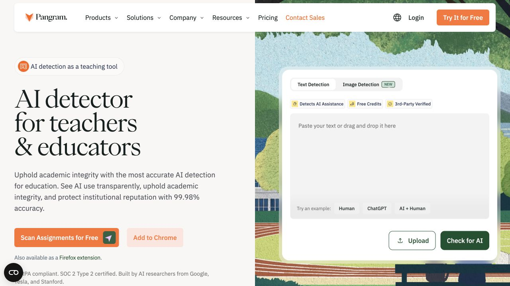

01 · Héros
Héros en deux colonnes
Titre et présentation à gauche, grand visuel sur la moitié droite. Le module logiciel devient un emplacement photographique APADER ; les actions mènent aux sections de la page.
Pangram · Teachers ↗Voir la section assemblée →